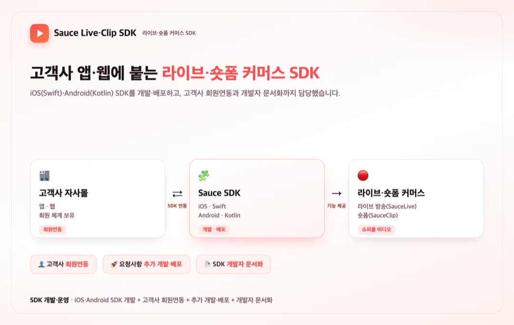

홈 / 포트폴리오 / Sauce Live·Clip — 커머스 SDK
SDK·플러그인
라이브·숏폼 커머스 SDK(Sauce Live·Clip) iOS·Android 개발 및 배포
참여 기간 · 2024.01 ~ 2024.06

포트폴리오 소개
- 고객사 자사몰(앱·웹)에 라이브커머스(SauceLive)와 숏폼(SauceClip)을 붙일 수 있게 하는 iOS·Android SDK를 개발·배포하고, 고객사 회원연동과 SDK 사용 문서화까지 담당했습니다.
- iOS는 Swift, Android는 Kotlin으로 각각 SDK를 개발했습니다.
작업 범위
- iOS(Swift)·Android(Kotlin) SDK 개발
- 고객사 회원연동 기능 개발
- 고객사 요청사항에 따른 추가 개발 및 배포
- SDK 사용을 위한 개발자 문서 작성
주요 업무 및 기능
- SDK 개발: Swift(iOS)·Kotlin(Android)로 라이브·숏폼 커머스 SDK 구현
- 회원연동: 고객사 회원 체계와 SDK를 연동
- 배포·운영: 고객사 요청에 따른 추가 개발·배포 대응
- 개발자 지원: SDK 사용 문서화로 고객사 개발자의 연동을 지원
주안점
- 여러 고객사 앱/웹에 안정적으로 붙는 SDK의 호환성·안정성
- 고객사 회원 체계와의 연동 정확성
- 문서화로 고객사 개발자의 연동 난이도를 낮추는 것
문제점
- 여러 고객사가 각자의 자사몰 앱·웹에 라이브·숏폼 커머스를 붙여야 했고, 매번 직접 구현하긴 어려웠습니다.
- 고객사마다 회원 체계가 달라 SDK와의 연동이 정확해야 했습니다.
- 고객사 개발자가 쉽게 붙일 수 있도록 문서·지원이 필요했습니다.
프로젝트 목표
- iOS·Android SDK로 라이브·숏폼 커머스를 고객사 앱/웹에 간편하게 통합.
- 고객사 회원 체계와의 연동을 안정적으로 제공.
- 문서화로 고객사 개발자의 연동을 지원.
주안점
- 다양한 고객사 환경에서의 SDK 호환성·안정성.
- 회원연동의 정확성.
- 개발자 문서로 연동 난이도 감소.
프로젝트 성과
iOS·Android SDK 개발·배포
Swift(iOS)·Kotlin(Android)로 라이브·숏폼 커머스 SDK를 개발하고, 고객사 요청에 따라 추가 개발·배포했습니다.
고객사 회원연동
고객사마다 다른 회원 체계와 SDK를 연동해, 자사몰 앱·웹에서 라이브·숏폼 커머스가 동작하도록 구현했습니다.
개발자 문서화로 연동 지원
SDK 사용을 위한 개발자 문서를 작성해 고객사 개발자가 쉽게 연동하도록 지원했습니다.
비슷한 프로젝트를 계획 중이신가요? 아이디어 단계여도 괜찮습니다.
프로젝트 문의하기 →